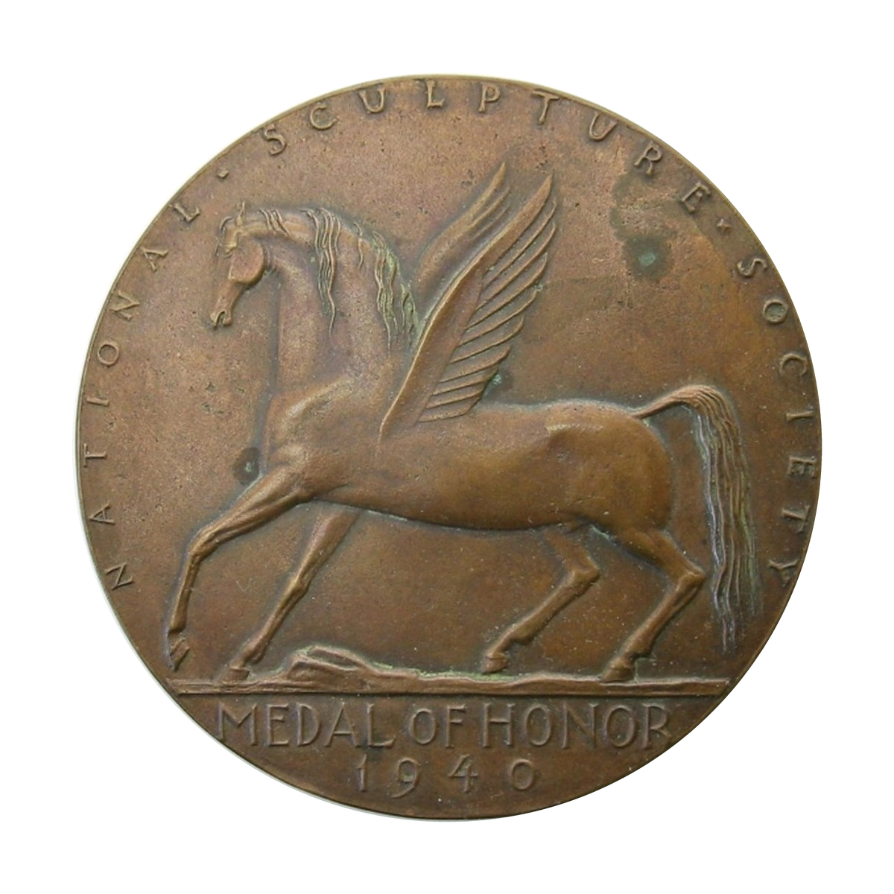
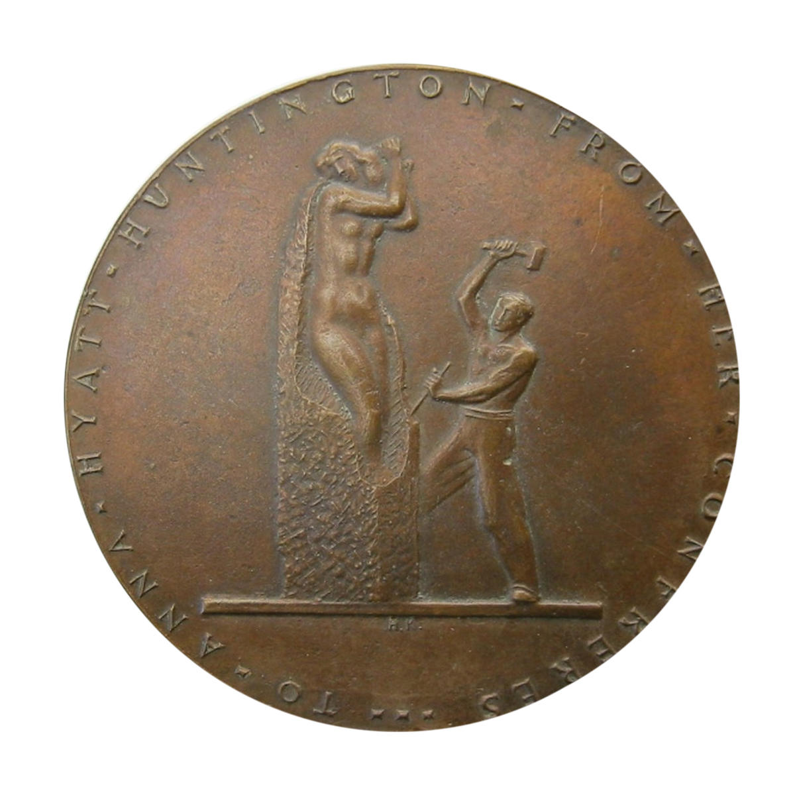

Medal of Honor · 1940
National
Sculpture Society
Kreis's first-prize design joined Pegasus with an image of the sculptor at work. The gold medal was presented to Anna Hyatt Huntington by her fellow sculptors.
- Designer
- Henry Kreis
- Recipient
- Anna Hyatt Huntington
- Material
- Gold
- Mintage
- 1
The medal
Inspiration and craft


Medal test-strike photographs from the Kreis family collection.
The competition
First prize among 43 models
The National Sculpture Society invited its members to submit designs for a new Medal of Honor. Forty-three models were entered and 61 votes were cast. Kreis's submission, identified as model number 43, received the highest vote.
Kreis, Paul Manship, Humbert Albrizio, and Carl L. Schmitz each received a $100 award. Kreis and Manship were then given an additional $650 to prepare their winning designs in plaster for reduction.
The presentation
For Anna Hyatt Huntington
The Competition Program Committee recorded Kreis as the first-prize winner. The gold medal was presented to sculptor Anna Hyatt Huntington on March 28, 1940.
The reverse makes the presentation personal: “To Anna Hyatt Huntington from her confreres.” Rather than a portrait, Kreis represented the practice of sculpture itself through a figure using mallet and chisel.
Two commissioned designs
A separate medal for Whitney
The Society commissioned both Kreis and Paul Manship to complete medal designs after the competition. Contemporary committee records distinguish the resulting presentations.
Kreis's medal honored Huntington. Manship's separate design was presented to Gertrude Vanderbilt Whitney at the opening of the Whitney Museum's Sculpture Festival. The two medals should not be treated as versions of a single object.
The imagery
Pegasus and the sculptor
Pegasus gives the obverse an emblem of imaginative aspiration. On the reverse, inspiration becomes physical work as the sculptor shapes a tall figure by hand.
The relationship between the two sides is visually clear, but no statement by Kreis explaining his intended symbolism has yet been located.
Recorded details
Medal details
- Year
- 1940
- Issuer
- National Sculpture Society
- Designer
- Henry Kreis
- Competition model
- No. 43
- Recipient
- Anna Hyatt Huntington
- Presentation date
- March 28, 1940
- Material
- Gold
- Dimensions
- Not documented
- Producer
- Not documented
- Mintage
- 1
Research sources
Archival record
- National Sculpture Society Council minutes, February 20, 1940; March 1940 newsletter; and Competition Program Committee report, May 14, 1940.
- National Sculpture Society: Medal of Honor
- National Academy of Design: Henry Kreis
- The New York Times, February 21, 1940
- The New York Times, March 30, 1940
- Smithsonian Archives of American Art: Henry Kreis papers, 1920–1963